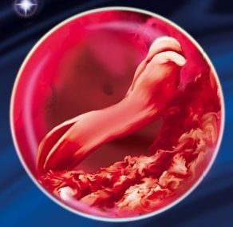
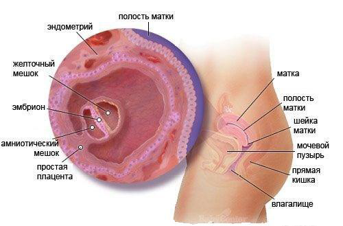

4 неделя беременности

Во время четвертой недели беременности происходит не только закладка, но также и дальнейшее развитие всех важных органов ребенка – кишечник, легкие, печень.
На 4 неделе беременности по акушерскому подсчету эмбрион только начинает путь в «свой домик». Ему предстоит пройти много нелегких путей, пока он не достигнет своего места, и не начнет формировать пузырь, в котором он проживет восемь с половиной месяцев. Уже сейчас происходит развитие плода, он превращается в эмбрион, который внешне похож на плоский диск. Сейчас эмбрион начинает активно расти, образуются всевозможные мелкие ткани и жизненно важные органы. Так как зародыш состоит из трех листков, каждый из них отвечает за рост клеток:
- Эндодерма (внутренний слой) – участвует в образовании желудочно-кишечного тракта, легочной ткани и печени;
- Мезодерма (средний слой) – помогает в развитии сердечнососудистой системы, скелета и мышечной ткани;
- Эктодерма (внешний слой) – создает кожные покровы, волосы, эмаль зубов, глаза и центральную нервную систему.
В реальности ваш срок составляет 2 недели, но официально вы считаетесь беременной 4 недели.
УЗИ на 4 неделе беременности, в свою очередь, способно показать желтое тело беременности, которое постепенно увеличивается в размерах, питая эмбрион до образования и полноценного функционирования плаценты. Помимо всего прочего, задачей желтого тела становится также и выработка прогестерона – гормона, отвечающего за сохранение беременности. Помимо желтого тела, высокочувствительные аппараты УЗИ на 4 неделе беременности способны определить и закрепившийся в матке зародыш. Вот только проводятся такие обследования крайне редко: на этом этапе женщина зачастую только лишь подозревает свое возможное «интересное положение», сомневаясь, стоит ли делать соответствующий тест.
Бластоциста, которая сформировалась на прошлой неделе, теперь достигла матки и внедрилась в ее слизистую оболочку.
Ее клетки начнут деление на те, которые станут ребенком, и те, которые станут плацентой. Эмбрион обрел теперь место, которое будет его «домом» до самых родов. Начинается формирование позвоночника и всех других важнейших органов ребенка.
Развитие эмбриона на 4 неделе беременности
К концу четвертой недели беременности сформируется сердечная пульсирующая трубка, которая в будущем превратится в сердечно сосудистую систему.
Так же у будущего ребенка формируются 3 мозговых пузыря, каждый из которых превратится в определенную мозговую структуру.
В середине 4 недели начинает закладываться дыхательная система, сейчас она ребенку не нужна, т.к. углекислый газ попадает в кровь матери и далее выводится вашими легкими (малыш «дышит» легкими мамы).
Развивается желточный мешочек, который будет запасать необходимые питательные вещества для эмбриона, в дальнейшем он исчезнет.
Внутриутробное развитие эмбриона на 4 неделе беременности
ВАШ ОРГАНИЗМ
Поскольку признаки беременности очень похожи на предменструальные симптомы, вы можете подумать, что у вас вскоре начнутся месячные. Болезненность молочных желез и легкий дискомфорт в области живота, которые некоторые женщины могут испытывать во время месячных, могут по-прежнему возникнуть. Возможно, что вы даже заметите слабые кровяные выделения во время имплантации, но это нормально. Ваш пульс может стать чаще, что также нормально, поскольку ваше сердце старается привыкнуть к перекачиванию дополнительного объема крови. В течение беременности объем крови в вашем организме увеличивается на 40-50 процентов.
Очень часто беременность провоцирует изменения эмоционального фона женщины. Она может стать нервной и раздражительной, плаксивой и очень впечатлительной. Кто-то чувствует постоянную усталость. Некоторых слегка тошнит. Резкие перепады настроения, повышенная слезливость и прочие эмоциональные проявления могут быть очевидными признаками того, что в организме женщины уже растет будущий маленький человечек.
Каждый организм индивидуален, поэтому есть женщины, которые не догадываются о своей беременности на протяжении 4 недель.
В связи с изменением гормонального фона на 4 неделе беременности происходят изменения и в матке. Гормон прогестерон способствует обустройству эмбриона в матке, которая набухает и становится мягче, однако пока не увеличивается.
Внутри создается своеобразная слизистая пробка плотной структуры, которая будет обеспечивать безопасность «жилища» ребенка. Такая пробка защищает также плод от различных инфекций в период всего развития до самого рождения.
Очень часто на этом сроке у беременных возникают ощущения боли в области живота. Это может быть связано с быстрыми темпами развития зародыша и процессом перестройки организма женщины в связи с новым положением. Кроме этого, на сроке 4 недели может тянуть и болеть живот у женщин с болезненными месячными. Этот срок является критическим периодом, поскольку раньше в это время у теперь уже беременной женщины должна была начаться менструация. Тянущие боли в животе могут быть свидетельством и повышенного тонуса матки. Бывают случаи, когда такого рода неприятные ощущения в результате заканчиваются кровотечением и самопроизвольным выкидышем. Поэтому в случае необходимости стоит обратиться за помощью к врачу, возможно это предотвратит такие плачевные последствия.
Вы, возможно, уже сделали экспресс-тест на беременность, и, если результат оказался отрицательным, а месячные по-прежнему не наступили, повторите его через несколько дней. Некоторые тесты имеют более низкую чувствительность к гормону ХГЧ. У женщин, беременных двойней, концентрация ХГЧ может быть выше, чем у беременных одним ребенком, что иногда является ранним признаком беременности двойней.
Когда тест на беременность, будь то бытовой или сделанный в поликлинике, покажет положительный результат, вы, наконец, готовы гордо воскликнуть: «Я беременна!».
ЗДОРОВЫЕ СОВЕТЫ
Обеспечивайте себе достаточный отдых, продолжайте принимать пренатальные витамины и пристально следите за своим здоровьем. Не принимайте алкоголь, табак, медикаменты. Если появилась тошнота по утрам, употребляйте в пищу лимон, кусочек черного хлеба, чай из мяты, мятные леденцы (но не жевательная резинка) – все это поможет улучшить самочувствие и ослабить рвотные позывы.
Если вы не доверяете экспресс-тестам на беременность, можно сдать кровь на ХГЧ – это более точный метод.
Поскольку в крови содержится большое количество нового гормона и его резко увеличившийся показатель не что иное, как признак «интересного» положения.
Так же стремительно при нормальной беременности растет и количество вырабатываемого организмом прогестерона.
СОВЕТЫ И РЕКОМЕНДАЦИИ
- Не стоит беспокоиться, когда на 4 неделе ваши соски начнут набухать, а грудь начнет увеличиваться и станет достаточно болезненной.
- Можно так же не беспокоиться, если наблюдается небольшая болезненность внизу живота и капельные выделения. Но лучше проконсультироваться, если боль и выделения настойчивы и обильны.
- Больше отдыхайте, спите, если есть слабость и сонливость. Все так и должно происходить.
- Можно для подтверждения беременности сделать тест или сдать кровь на наличие «гормонов беременности».
- Почитайте о токсикозе и сделайте коррекцию питания при возможно появившейся утренней тошноте.
- Продолжайте легкие, специально для первого триместра, упражнения, пейте витамины, остерегайтесь тяжестей и нервных срывов.
- И не думайте о табаке и алкоголе!